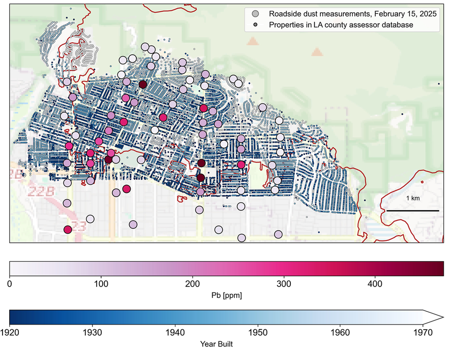

Elevated Environmental Lead Concentrations Following a Major Urban Fire
The LA wildfires devastated tens of thousands of homes, and mobilized pollutants across the greater Los Angeles Area in excess of healthy thresholds. Burning structures, especially older homes with lead based infrastructure, was the likely source of lead contamination.